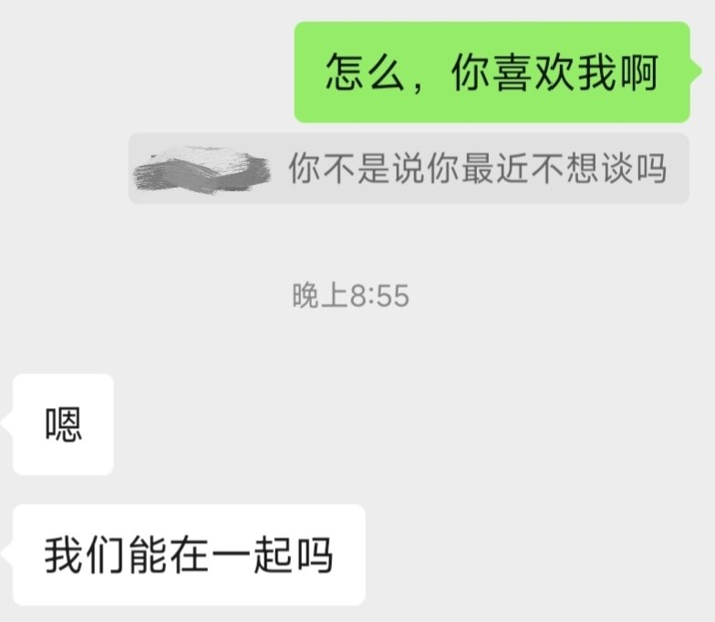

𝓒𝓻𝓮𝓪𝓶 𝓒𝓱𝓮𝓮𝓼𝓮
@LastTrouvaille
@Nomia755 鸭鸭一定要幸福呀！！

糯米鸭🐣
@Nomia755
被五年前特别喜欢的学长表白了，我脑子里一片空白，从来没有预设过他真的会喜欢我。
他高考完把笔记送给我，天哪，怎么会有人把字写得那么工整可爱！从那一天起我就开始关注他，路过光荣榜时会仔细寻找他的名字，跟他分享我们的高三生活。当时楼上是一层空教室，每天晚上我会特地到他曾经的班级自习。 https://t.co/0Jp4szcB3P